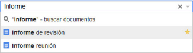
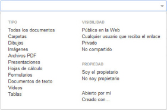

Para hallar documentos, archivos o carpetas podremos realizar la búsqueda de dos formas distintas: de manera simple o de forma avanzada. Las veremos a continuación.
-

- Búsqueda simple: Sólo tenemos que introducir los términos de búsqueda o extensión del archivo, en el cuadro de búsqueda y hacer clic sobre el botón del icono de la lupa. Aparecerán a continuación todos los resultados de la búsqueda.
-

- Búsqueda avanzada: Si hacemos clic sobre la flecha que se encuentra a la derecha del cuadro de búsqueda, se desplegará un menú de opciones avanzadas. Con estas opciones, podremos filtrar nuestra búsqueda para hacerla más concreta y efectiva.

A medida que selecciones los filtros de la búsqueda avanzada, la lista de documentos se reducirá mostrando solo aquellos que concuerdan. Además, podrás escribir un término para buscar en los resultados filtrados.